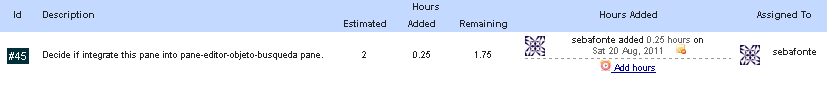
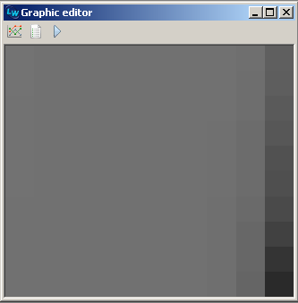
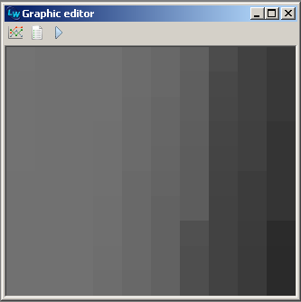
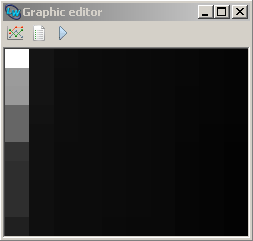

As a first approach to ADFs, implemented some compression operators (and some other objects to support them). Long time ago i wanted to implement something like a GLiB compression operators experiment i have seen here.
No seriously tested yet, just run for some time. Recursion it큦 still not controlled, i hope to get it working next weekend.
Slow for sure by the moment.
Recently implemented an example of the Clark & Wright savings algorithm (parallel and sequential version) prototype, been looking for some test examples, and just found this one. I have to optimize a whole lot of things, but at least i know that parallel example works.
This example is a graphical representation of the parallel version for a problem instance taken from Golden & Wasil 2005 instances for DVRP:
These are the two mini monsters i created at the night, i expect to wake up to refactorize and optimize this code:
(defun clark-and-wright-sequential (evaluator) "Answer a new individual created using C-W savings heuristic. Sequential version implementation (Route Extension)." ;; Make initial solution (let ((solution (make-initial-cw-savings-solution evaluator))) (while-do ;; Calculate first saving (let ((routes-count (length solution))) (block 1 (dotimes (i routes-count) (dotimes (j routes-count) (if (not (= i j)) (let ((saving (saving-when-merging evaluator solution i j))) (when (and (> saving 0) (is-merge-feasible evaluator solution i j)) ;; Add to feasible (setf solution (merge-routes solution (list i j saving))) (return-from 1 t))))))))) ;; Answer merged solution solution))
(defun clark-and-wright-parallel (evaluator) "Answer a new individual created using C-W savings heuristic. Parallel version implementation (Best Feasible Merge)." ;; Make initial solution (let ((solution (make-initial-cw-savings-solution evaluator))) (while-do (let* ((routes-count (length solution)) (savings (make-array (sqr routes-count) :initial-element nil)) (savings-counter 0)) ;; Calculate savings (dotimes (i routes-count) (dotimes (j routes-count) (if (not (= i j)) (let ((saving (saving-when-merging evaluator solution i j))) (when (and (> saving 0) (is-merge-feasible evaluator solution i j)) (let ((a (first (route-at solution i))) (b (first (last (route-at solution j))))) ;; Add to savings list (setf (aref savings savings-counter) (list a b saving)) (incf savings-counter))))))) ;; Merge routes with best savings when possible (sort savings (lambda (a b) (if (and a b) (> (third a) (third b)) a))) (when (> savings-counter 0) (dotimes (i savings-counter) (multiple-value-bind (result flag) (merge-when-possible evaluator solution (aref savings i)) (when flag (setf solution result savings-counter 0)))) (zerop savings-counter)))) ;; Answer merged solution solution))
At the beggining of the weekend been working to make nicer panes for graphics. When i was looking for storys on my proyect tracking i saw accidentally:

I decided it will be a composite relationship, editor-pane will set graphic-pane subject to it큦 selected object. By default the graphic will be just the representation, but it could be modified to display any possible graphic for the editor-pane selected object.
I changed graphic editors look for OpenGL visualization mode. They are very simple, they consist of the graphic and a three button toolbar. These two examples correspond to a map of the population fitness of three algorithm situations:
  
I been playing with some simple regression example, and thought it was a very well candidate for default documentation examples. It큦 about searching for the function (+ (+ (* X X) (* 2 (* Y Y))) (/ Y 3)). In the next shot we can see different graphics for a run that found the desired solution in 56 seconds, and 2 executions later in 23 seconds:
Example graphics for size and fitness, some population fitness map and the result found. I think a very good way to show experiments conclusions is using graphics, but still looking how can i show more things in fewer examples.
Just decided to tanslate a simple fx i've got on some old C++ code, always liked to interpolate sets of these texture deformations..
Been working to make OpenGL visualization acceptable. The time to put fonts has become and i hate this topic personally. Here i show how horrible fonts are at first in this visualization mode.
{kind=link}
{kind=link}
{kind=link}
{kind=link}
{kind=link}
{kind=link}
{kind=link}
{kind=link}
{kind=link}
{kind=link}
{kind=link}